中文
中文T. Araki et al.
Editor’s Note
The KamLAND anti-neutrino detector at the Kamioka mine in Japan was the first detector sensitive enough to detect neutrino oscillations—the spontaneous transformation of a neutrino from one type to another—by looking at anti-neutrinos from nuclear reactors. As Takeo Araki and colleagues note here, the detector was also sensitive enough to detect neutrinos produced in the Earth’s interior from radioactive decay of uranium or thorium. Previous estimates of the energy released by such decays suggested that it accounted for fully half of the total energy dissipated inside the planet, making radioactivity a significant contributor to the heat of the deep earth. The results here broadly agree with the earlier figures, and put an improved upper limit on its value. 中文
The detection of electron antineutrinos produced by natural radioactivity in the Earth could yield important geophysical information. The Kamioka liquid scintillator antineutrino detector (KamLAND) has the sensitivity to detect electron antineutrinos produced by the decay of 238U and 232Th within the Earth. Earth composition models suggest that the radiogenic power from these isotope decays is 16 TW, approximately half of the total measured heat dissipation rate from the Earth. Here we present results from a search for geoneutrinos with KamLAND. Assuming a Th / U mass concentration ratio of 3.9, the 90 per cent confidence interval for the total number of geoneutrinos detected is 4.5 to 54.2. This result is consistent with the central value of 19 predicted by geophysical models. Although our present data have limited statistical power, they nevertheless provide by direct means an upper limit (60 TW) for the radiogenic power of U and Th in the Earth, a quantity that is currently poorly constrained. 中文
THE Kamioka liquid scintillator antineutrino detector (KamLAND) has demonstrated neutrino oscillation using electron antineutrinos (
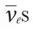
) with energies of a few MeV from nuclear reactors1,2. Additionally, KamLAND is the first detector sensitive enough to measure produced in the Earth from the 238U and 232Th decay chains. Using to study processes inside the Earth was first suggested by Eder3 and Marx4, and has been reviewed a number of times5-10. As produced from the 238U and 232Th decay chains have exceedingly small interaction cross-sections, they propagate undisturbed in the Earth’s interior, and their measurement near the Earth’s surface can be used to gain information on their sources. Although the detection of from 40K decay would also be of great interest in geophysics, with possible applications in the interpretation of geo-magnetism, their energies are too low to be detected with KamLAND. The antineutrino flux above our detection threshold from other long-lived isotopes is expected to be negligible. 中文
The Radiogenic Earth
The total power dissipated from the Earth (heat flow) has been measured with thermal techniques11 to be 44.2±1.0 TW. Despite this small quoted error, a more recent evaluation12 of the same data (assuming much lower hydrothermal heat flow near mid-ocean ridges) has led to a lower figure of 31±1 TW. On the basis of studies of chondritic meteorites13 the calculated radiogenic power is thought to be 19 TW, 84% of which is produced by 238U and 232Th decay. Some models of mantle convection suggest that radiogenic power is a larger fraction of the total power14,15. 中文
238U and 232Th decay via a series of well-established α and β－ processes16 terminating in the stable isotopes 206Pb and 208Pb, respectively. Each β－ decay produces a daughter nucleus, an electron and a
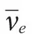
. The energy distribution is well established17, and includes a correction for the electromagnetic interaction between the electron and the charge distribution of the daughter nucleus. Figure 1 shows the expected distribution, dn(Eν) / dEν, as a function of energy, Eν, for the 238U and 232Th decay chains. 中文
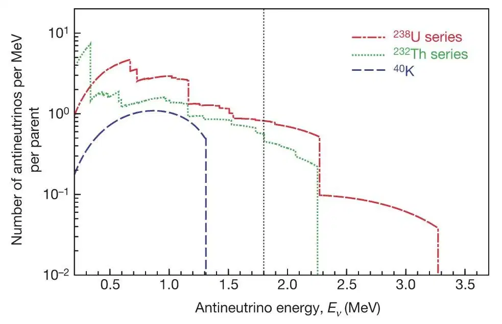
Fig. 1. The expected 238U, 232Th and 40K decay chain electron antineutrino energy distributions. KamLAND can only detect electron antineutrinos to the right of the vertical dotted black line; hence it is insensitive to 40K electron antineutrinos. 中文
Ignoring the negligible neutrino absorption, the expected flux at a position r for each isotope is given by:
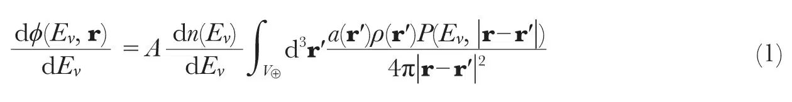
where A is the decay rate per unit mass, the integral is over the volume of the Earth, a(r') is the isotope mass per unit rock mass,  (r') is the rock density, and P(Eν,|r-r'|) is the “survival” probability after travelling a distance |r-r'|. This probability derives from the now accepted phenomenon of neutrino oscillation, and can be written, for two neutrino flavours as18
(r') is the rock density, and P(Eν,|r-r'|) is the “survival” probability after travelling a distance |r-r'|. This probability derives from the now accepted phenomenon of neutrino oscillation, and can be written, for two neutrino flavours as18
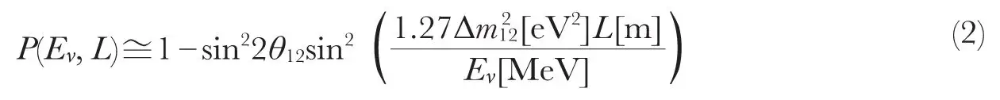
where L=|r-r'|. The neutrino oscillation parameters  and sin22θ12=0.82±0.07 are also determined with KamLAND2 using reactor with energies above those of geoneutrinos, combined with solar neutrino experiments19. Corrections from three flavour neutrino oscillation (<5%) and “matter effects”20 (~1%) are ignored. For typical geoneutrino energies, the approximation P(Eν, |L|)=1-0.5sin22θ12 only affects the accuracy of the integral in equation (1) at 1% owing to the distributed production points. This approximation, used in this paper, neglects energy spectrum distortions. 中文
and sin22θ12=0.82±0.07 are also determined with KamLAND2 using reactor with energies above those of geoneutrinos, combined with solar neutrino experiments19. Corrections from three flavour neutrino oscillation (<5%) and “matter effects”20 (~1%) are ignored. For typical geoneutrino energies, the approximation P(Eν, |L|)=1-0.5sin22θ12 only affects the accuracy of the integral in equation (1) at 1% owing to the distributed production points. This approximation, used in this paper, neglects energy spectrum distortions. 中文
Geoneutrino Detection
KamLAND is located in the Kamioka mine, 1,000 m below the summit of Mt Ikenoyama, Gifu prefecture, Japan (36° 25′36″ N, 137° 18′43″ E). It detects electron antineutrinos in ~1 kton of liquid scintillator via neutron inverse β-decay,
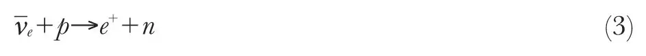
which has a well-established cross-section21 as a function of Eν. Scintillation light from the e+, “prompt event”, gives an estimate of the incident energy, Eν≈Ee++0.8 MeV (neglecting the small neutron recoil), where Ee+ is the kinetic energy of the positron plus the electron–positron annihilation energy. With a mean time of ~200 μs, the neutron is captured by a proton, producing a deuteron and a 2.2 MeV γ-ray. The detection of scintillation light from this 2.2 MeV γ-ray is referred to as the “delayed event”. The spatial and temporal coincidences between the prompt and delayed events provide a powerful tool for reducing backgrounds, which generally limit the sensitivity in low energy neutrino studies. 中文
A reference model22 is constructed using seismic data to divide the Earth into continental crust, oceanic crust, mantle, core and sediment. Some of these regions are further sub-divided, with each sub-region having different U and Th concentrations. This model assumes that U and Th are absent from the core. The expected geoneutrino flux at KamLAND, including a suppression factor of 0.59 due to neutrino oscillations, is 2.34×106 cm－2 s－1 and 1.98×106 cm－2 s－1 from the 238U and 232Th decay chains, respectively. Including the detection cross-section, the number of geoneutrinos expected at KamLAND from 238U and 232Th decay is 3.85×10－31 per target proton per year, 79% of which is due to 238U. Figure 2 shows that a large fraction of the expected geoneutrino flux originates in the area surrounding KamLAND. The effect of local geology was studied extensively in the context of the reference model22 and was found to produce less than a 10% error on the total expected flux. 中文
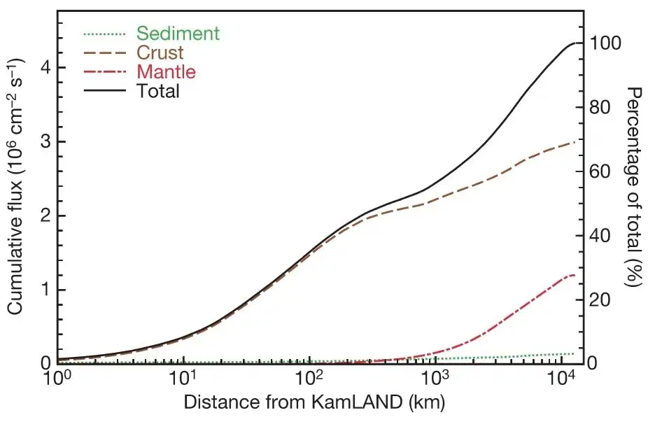
Fig. 2. The expected total 238U and 232Th geoneutrino flux within a given distance from KamLAND22. Approximately 25% and 50% of the total flux originates within 50 km and 500 km of KamLAND, respectively. The line representing the crust includes both the continental and the almost negligible oceanic contribution. 中文
The data presented here are based on a total detector live-time of 749.1±0.5 d after basic cuts to ensure the reliability of the data. The number of target protons is estimated at (3.46±0.17)×1031 on the basis of target proton density and a spherical fiducial scintillator volume with 5 m radius, resulting in a total exposure of (7.09±0.35)×1031 target proton years. The overall efficiency for detecting geoneutrino candidates with energies between 1.7 and 3.4 MeV in the fiducial volume is estimated to be 0.687±0.007. The energy range reaches below the inverse β-decay threshold owing to the detector energy resolution. 中文
Backgrounds for geoneutrino candidates are dominated by from nuclear reactors in the vicinity of the detector, and by α-particle induced neutron backgrounds due to radioactive contamination within the detector. Reactor reach substantially higher energies, as shown in Fig. 3. Therefore, the oscillation parameters in ref. 2 were determined by analysing with energies greater than 3.4 MeV, where there is no signal from the geoneutrinos. Using these parameters, the number of nuclear reactor background events used by the “rate only” analysis discussed below is determined to be 80.4±7.2. 中文
The α-particle-induced neutron background is due to the 13C(α,n)16O reaction where the α-particle is produced in 210Po decay with a kinetic energy of 5.3 MeV. The 210Po is produced by the decay of 210Pb, which has a half-life of 22 yr. The 210Pb resulted from the decay of 222Rn contamination, and is distributed throughout the detector. The neutrons in the 13C(α,n)16O reaction are produced with kinetic energy up to 7.3 MeV. Owing to scintillation light quenching for high ionization density, only about one-third of this energy is converted into “visible” energy as the neutrons thermalize. The thermal neutrons are captured by protons with a mean capture time of ~200 μs, producing a delayed signal identical to that from neutron inverse β-decay. The number of 13C nuclei in the fiducial volume is determined from the measured 13C / 12C ratio in the KamLAND scintillator. On the basis of the 13C(α,n)16O reaction cross-section23, the α-particle energy loss in the scintillator24, and the number of 210Po decays, the total number of neutrons produced is expected to be 93±22. This error is dominated by estimated 20% and 14% uncertainties in the total 13C(α,n)16O reaction cross-section and the number of 210Po decays, respectively. The neutron energy distribution is calculated using the measured neutron angular distributions in the centre of mass frame25,26. Including the efficiency for passing the candidate cuts, the number of (α,n) background events is estimated to be 42±11. 中文
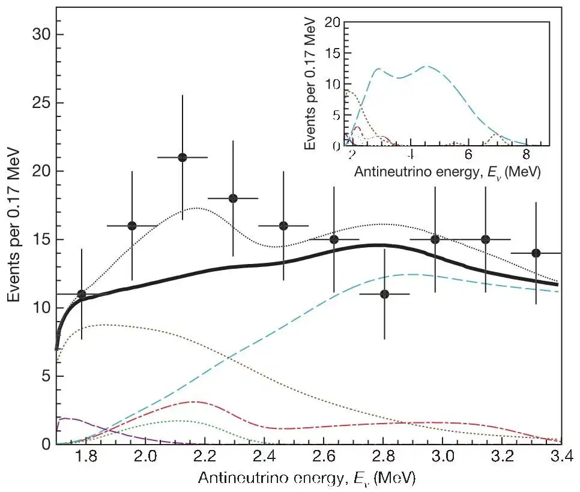
Fig. 3. energy spectra in KamLAND. Main panel, experimental points together with the total expectation (thin dotted black line). Also shown are the total expected spectrum excluding the geoneutrino signal (thick solid black line), the expected signals from 238U (dot-dashed red line) and 232Th (dotted green line) geoneutrinos, and the backgrounds due to reactor (dashed light blue line), 13C(α,n)16O reactions (dotted brown line), and random coincidences (dashed purple line). Inset, expected spectra extended to higher energy. The geoneutrino spectra are calculated from our reference model, which assumes 16 TW radiogenic power from 238U and 232Th. The error bars represent ±1 standard deviation intervals. 中文
There is a small contribution to the background from random coincidences, from the β－ decay of long lived nuclear reactor fission products, and radioactive isotopes produced by cosmic rays. Using an out-of-time coincidence cut from 10 ms to 20 s, the random coincidence background is estimated to be 2.38±0.01 events. Using the expected energy spectrum27 for long lived nuclear reactor fission products, the corresponding background is estimated to be 1.9±0.2 events. The most significant background due to radioactive isotopes produced by cosmic rays is from the β－ decay 9Li→2α+n+e－+, which has a neutron in the final state. On the basis of events correlated with cosmic rays, the estimated number of background events caused by radioactive 9Li is 0.30±0.05. Other backgrounds considered and found to be negligible include spontaneous fission, neutron emitters and correlated decays in the radioactive background decay chains, fast neutrons from cosmic ray interactions, (γ,n) reactions and solar νe induced break-up of 2H. The total background is estimated to be 127±13 events (1σ error). 中文
The total number of observed candidates is 152, with their energy distribution shown in Fig. 3. Including the geoneutrino detection systematic errors, parts of which are correlated with the background estimation errors, a “rate only” analysis gives  geoneutrino candidates from the 238U and 232Th decay chains. Dividing by the detection efficiency, live-time, and number of target protons, the total geoneutrino detected rate obtained is
geoneutrino candidates from the 238U and 232Th decay chains. Dividing by the detection efficiency, live-time, and number of target protons, the total geoneutrino detected rate obtained is
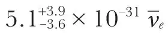
per target proton per year. 中文
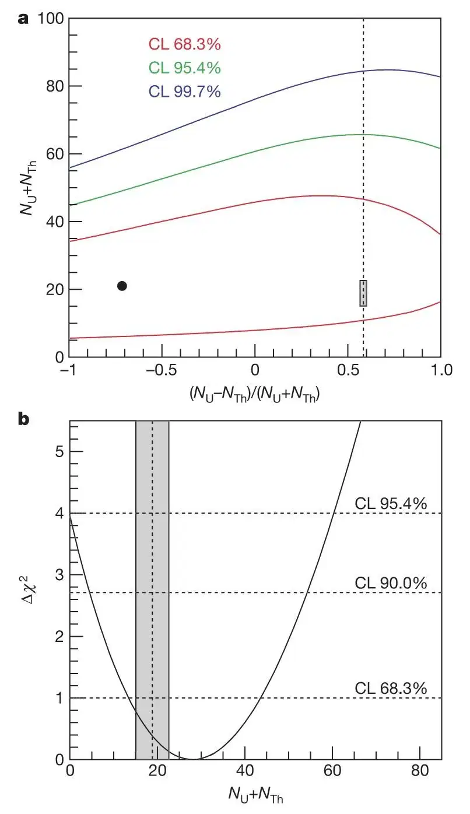
Fig. 4. Confidence intervals for the number of geoneutrinos detected. Panel a shows the 68.3% confidence level (CL; red), 95.4% CL (green) and 99.7% CL (blue) contours for detected 238U and 232Th geoneutrinos. The small shaded area represents the prediction from the geophysical model. The vertical dashed line represents the value of (NU-NTh) / (NU+NTh) assuming the mass ratio, Th / U=3.9, derived from chondritic meteorites, and accounting for the 238U and 232Th decay rates and the detection efficiencies in KamLAND. The dot represents our best fit point, favouring 3 238U geoneutrinos and 18 232Th geoneutrinos. Panel b shows Δχ2 as a function of the total number of 238U and 232Th geoneutrino candidates, fixing the normalized difference to the chondritic meteorites constraint. The grey band gives the value of NU+NTh predicted by the geophysical model. 中文
We also perform an un-binned maximum likelihood analysis of the energy spectrum between 1.7 and 3.4 MeV, using the known shape of the signal and background spectra. As the neutrino oscillation parameters do not significantly affect the expected shape of the geoneutrino signal, the un-oscillated shape is assumed. However, the oscillation parameters are included in the reactor background shape. Figure 4a shows the confidence intervals for the number of observed 238U and 232Th geoneutrinos. Based on a study of chondritic meteorites28, the Th / U mass ratio in the Earth is believed to be between 3.7 and 4.1, and is known better than either absolute concentration. Assuming a Th / U mass ratio of 3.9, we estimate the 90% confidence interval for the total number of 238U and 232Th geoneutrino candidates to be 4.5 to 54.2, as shown in Fig. 4b. The central value of 28.0 is consistent with the “rate only” analysis. At this point, the value of the fit parameters are
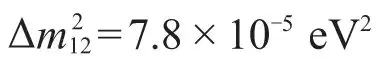
, sin22θ12=0.82, pα=1.0, and qα=1.0, where these last two parameters are defined in the Methods section. The 99% confidence upper limit obtained on the total detected 238U and 232Th geoneutrino rate is 1.45×10－30 per target proton per year, corresponding to a flux at KamLAND of 1.62×107 cm－2 s－1. On the basis of our reference model, this corresponds to an upper limit on the radiogenic power from 238U and 232Th decay of 60 TW. 中文
As a cross-check, an independent analysis29 has been performed using a partial data set, including detection efficiency, of 2.6×1031 target proton years. In this analysis, the 13C(α,n)16O background was verified using the minute differences in the time structures of scintillation light from different particle species. Scintillation light in the prompt part of events is caused by positrons, whereas scintillation light in the prompt part of 13C(α,n)16O background events is caused by neutron thermalization. This alternative analysis produced a slightly larger geoneutrino signal, which is consistent with the results presented here. 中文
Discussion and Future Prospects
In conclusion, we have performed the first experimental study of antineutrinos from the Earth’s interior using KamLAND. The present measurement is consistent with current geophysical models, and constrains the emission from U and Th in the planet to be less than 1.45×10－30 per target proton per year at 99% confidence limits, corresponding to a flux of 1.62×107 cm－2 s－1. There is currently a programme underway to reduce the 210Pb content of the detector. This should help to reduce the substantial systematic error due to the 13C(α,n)16O background. Further background reduction will require a new detector location, far away from nuclear reactors. The reported investigation of geoneutrinos should pave the way to future and more accurate measurements, which may provide a new window for the exploration of the Earth. 中文
Methods
As shown in Fig. 5, KamLAND1 consists of 1 kton of ultrapure liquid scintillator contained in a transparent nylon / EVOH (ethylene vinyl alcohol copolymer) composite film balloon suspended in non-scintillating oil. Charged particles deposit their kinetic energy in the scintillator; some of this energy is converted into scintillation light. The scintillation light is then detected by an array of 1,325 17-inch-diameter photomultiplier tubes (PMTs) and 554 20-inch-diameter PMTs mounted on the inner surface of an 18-m-diameter spherical stainless-steel containment vessel. A 3.2-kton water-Cherenkov detector with 225 20-inch-diameter PMTs surrounds the containment sphere. This outer detector tags cosmic-ray muons and absorbs γ-rays and neutrons from the surrounding rock. 中文
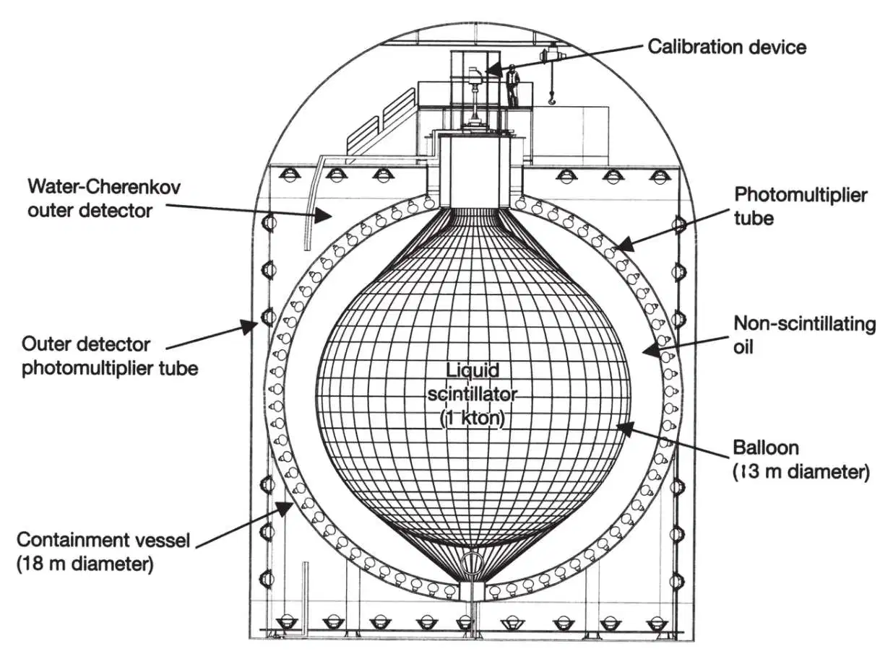
Fig. 5. Schematic diagram of the KamLAND detector. 中文
The arrival times of photons at the PMTs allow us to determine the location of particle interactions inside the detector, and the amount of detected light after correcting for spatial variation of the detector response allows us to determine the particle’s energy. The event location and energy determination is calibrated with γ-ray sources deployed vertically down the centre of the detector. To be classified as a candidate, the time coincidence between the prompt and delayed events (ΔT) is required to satisfy 0.5 μs<ΔT<500 μs. The position of the prompt (rp) and delayed (rd) events with respect to the centre of the detector are required to satisfy |rp|<5 m; |rd|<5 m and |rp-rd|<1.0 m: The energy of the electron antineutrino is required to satisfy 1.7 MeV<Eν<3.4 MeV and the energy of the delayed event (Ed) is required to satisfy 1.8 MeV<Ed<2.6 MeV. 中文
Given NU and NTh geoneutrinos detected from the 238U and 232Th decay chains, the expected energy distribution of the candidates is
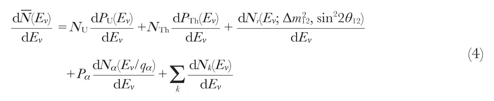
where dPU(Eν) / dEν and dPTh(Eν) / dEν are the normalized expected geoneutrino spectra from 238U and 232Th decay chains. The third term on the right hand side of equation (4) is the energy spectrum of the expected reactor background, which is a function of the neutrino oscillation parameters  and sin22θ12. dNα(Eν / qα) / dEν is the energy spectrum of the expected 13C(α,n)16O background with energy and rate scaling factors qα and pα, respectively. The sum is over the other known backgrounds where dNk(Eν) / dEν is the expected energy spectrum of the background. All expected spectra include energy smearing due to the detector energy resolution. Integrating equation (4) between 1.7 and 3.4 MeV gives the total number of expected candidates,
and sin22θ12. dNα(Eν / qα) / dEν is the energy spectrum of the expected 13C(α,n)16O background with energy and rate scaling factors qα and pα, respectively. The sum is over the other known backgrounds where dNk(Eν) / dEν is the expected energy spectrum of the background. All expected spectra include energy smearing due to the detector energy resolution. Integrating equation (4) between 1.7 and 3.4 MeV gives the total number of expected candidates,  . 中文
. 中文
The number of geoneutrinos from the 238U and 232Th decay chains is determined from an unbinned maximum likelihood fit. The log likelihood is defined by
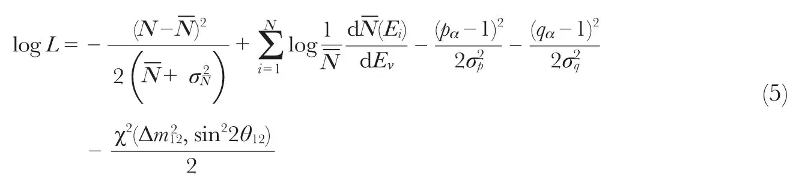
where N is the total number of observed candidates and  is the error on . Ei is the energy of the ith candidate. σp=0.24 and σq=0.1 are the fractional errors on qα and pα, respectively. The term χ2(Δm2, sin22θ) provides a constraint on the neutrino oscillation parameters from the KamLAND reactor measurements and the solar neutrino results30. logL is maximized at different values of NU and NTh by varying , sin22θ12, pα and qα. The best fit point for NU and NTh corresponds to the maximum logL. A Δχ2 is defined by
is the error on . Ei is the energy of the ith candidate. σp=0.24 and σq=0.1 are the fractional errors on qα and pα, respectively. The term χ2(Δm2, sin22θ) provides a constraint on the neutrino oscillation parameters from the KamLAND reactor measurements and the solar neutrino results30. logL is maximized at different values of NU and NTh by varying , sin22θ12, pα and qα. The best fit point for NU and NTh corresponds to the maximum logL. A Δχ2 is defined by
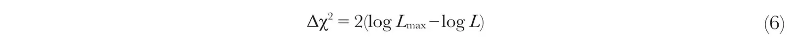
where log Lmax is the logL at the best fit point. The confidence intervals are calculated from this Δχ2. 中文
(436, 499-503; 2005)
T. Araki1, S. Enomoto1, K. Furuno1, Y. Gando1, K. Ichimura1, H. Ikeda1, K. Inoue1, Y. Kishimoto1, M. Koga1, Y. Koseki1, T. Maeda1, T. Mitsui1, M. Motoki1, K. Nakajima1, H. Ogawa1, M. Ogawa1, K. Owada1, J.-S. Ricol1, I. Shimizu1, J. Shirai1, F. Suekane1, A. Suzuki1, K. Tada1, S. Takeuchi1, K. Tamae1, Y. Tsuda1, H. Watanabe1, J. Busenitz2, T. Classen2, Z. Djurcic2, G. Keefer2, D. Leonard2, A. Piepke2, E. Yakushev2, B. E. Berger3, Y. D. Chan3, M. P. Decowski3, D. A. Dwyer3, S. J. Freedman3, B. K. Fujikawa3, J. Goldman3, F. Gray3, K. M. Heeger3, L. Hsu3, K. T. Lesko3, K.-B. Luk3, H. Murayama3, T. O’Donnell3, A. W. P. Poon3, H. M. Steiner3, L. A. Winslow3, C. Mauger4, R. D. McKeown4, P. Vogel4, C. E. Lane5, T. Miletic5, G. Guillian6, J. G. Learned6, J. Maricic6, S. Matsuno6, S. Pakvasa6, G. A. Horton-Smith7, S. Dazeley8, S. Hatakeyama8, A. Rojas8, R. Svoboda8, B. D. Dieterle9, J. Detwiler10, G. Gratta10, K. Ishii10, N. Tolich10, Y. Uchida10, M. Batygov11, W. Bugg11, Y. Efremenko11, Y. Kamyshkov11, A. Kozlov11, Y. Nakamura11, H. J. Karwowski12, D. M. Markoff12, K. Nakamura12, R. M. Rohm12, W. Tornow12, R. Wendell12, M.-J. Chen13, Y.-F. Wang13 & F. Piquemal14
1 Research Center for Neutrino Science, Tohoku University, Sendai 980-8578, Japan
2 Department of Physics and Astronomy, University of Alabama, Tuscaloosa, Alabama 35487, USA
3 Physics Department, University of California at Berkeley and Lawrence Berkeley National Laboratory, Berkeley, California 94720, USA
4 W. K. Kellogg Radiation Laboratory, California Institute of Technology, Pasadena, California 91125, USA
5 Physics Department, Drexel University, Philadelphia, Pennsylvania 19104, USA
6 Department of Physics and Astronomy, University of Hawaii at Manoa, Honolulu, Hawaii 96822, USA
7 Department of Physics, Kansas State University, Manhattan, Kansas 66506, USA
8 Department of Physics and Astronomy, Louisiana State University, Baton Rouge, Louisiana 70803, USA
9 Physics Department, University of New Mexico, Albuquerque, New Mexico 87131, USA
10 Physics Department, Stanford University, Stanford, California 94305, USA
11 Department of Physics and Astronomy, University of Tennessee, Knoxville, Tennessee 37996, USA
12 Physics Department, Duke University, Durham, North Carolina 27008, USA, and Physics Department, North Carolina State, Raleigh, North Carolina 27695, USA, and Physics Department, University of North Carolina, Chapel Hill, North Carolina 27599, USA
13 Institute of High Energy Physics, Beijing 100039, China
14 CEN Bordeaux-Gradignan, IN2P3-CNRS and University Bordeaux I, F-33175 Gradignan Cedex, France
Received 25 May; accepted 4 July 2005.
References:
1. Eguchi, K. et al. First results from KamLAND: Evidence for reactor antineutrino disappearance. Phys. Rev. Lett. 90, 021802 (2003).
2. Araki, T. et al. Measurement of neutrino oscillation with KamLAND: Evidence of spectral distortion. Phys. Rev. Lett. 94, 081801 (2005).
3. Eder, G. Terrestrial neutrinos. Nucl. Phys. 78, 657-662 (1966).
4. Marx, G. Geophysics by neutrinos. Czech. J. Phys. B 19, 1471-1479 (1969).
5. Avilez, C., Marx, G. & Fuentes, B. Earth as a source of antineutrinos. Phys. Rev. D 23, 1116-1117 (1981).
6. Krauss, L. M., Glashow, S. L. & Schramm, D. N. Antineutrino astronomy and geophysics. Nature 310, 191-198 (1984).
7. Kobayashi, M. & Fukao, Y. The Earth as an antineutrino star. Geophys. Res. Lett. 18, 633-636 (1991).
8. Raghavan, R. S. et al. Measuring the global radioactivity in the Earth by multidetector antineutrino spectroscopy. Phys. Rev. Lett. 80, 635-638 (1998).
9. Rothschild, C. G., Chen, M. C. & Calaprice, F. P. Antineutrino geophysics with liquid scintillator detectors. Geophys. Res. Lett. 25, 1083-1086 (1998).
10. Mantovani, F., Carmignani, L., Fiorentini, G. & Lissia, M. Antineutrinos from Earth: A reference model and its uncertainties. Phys. Rev. D 69, 013001 (2004).
11. Pollack, H. N., Hurter, S. J. & Johnson, J. R. Heat flow from the Earth’s interior: analysis of the global data set. Rev. Geophys. 31, 267-280 (1993).
12. Hofmeister, A. M. & Criss, R. E. Earth’s heat flux revised and linked to chemistry. Tectonophysics 395, 159-177 (2005).
13. McDonough, W. F. & Sun, S.-s. The composition of the Earth. Chem. Geol. 120, 223-253 (1995).
14. Jackson, M. J. & Pollack, H. N. On the sensitivity of parameterized convection to the rate of decay of internal heat sources. J. Geophys. Res. 89, 10103-10108 (1984).
15. Richter, F. M. Regionalized models for the thermal evolution of the Earth. Earth Planet. Sci. Lett. 68, 471-484 (1984).
16. Firestone, R. B. Table of Isotopes 8th edn (John Wiley, New York, 1996).
17. Behrens, H. & Jänecke, J. Landolt-Börnstein - Group I, Elementary Particles, Nuclei and Atoms Vol. 4 (Springer, Berlin, 1969).
18. McKeown, R. D. & Vogel, P. Neutrino masses and oscillations: triumphs and challenges. Phys. Rep. 394, 315-356 (2004).
19. Ahmed, S. N. et al. Measurement of the total active 8B solar neutrino flux at the Sudbury Neutrino Observatory with enhanced neutral current sensitivity. Phys. Rev. Lett. 92, 181301 (2004).
20. Wolfenstein, L. Neutrino oscillations in matter. Phys. Rev. D 17, 2369-2374 (1978).
21. Vogel, P. & Beacom, J. F. Angular distribution of neutron inverse beta decay,  +p→e++n. Phys. Rev. D 60, 053003 (1999).
+p→e++n. Phys. Rev. D 60, 053003 (1999).
22. Enomoto, S. Neutrino Geophysics and Observation of Geo-neutrinos at KamLAND. Thesis, Tohoku Univ. (2005); available at〈http://www.awa.tohoku.ac.jp/KamLAND/publications/Sanshiro_thesis.pdf〉.
23. JENDL Japanese Evaluated Nuclear Data Library.〈http://wwwndc.tokai.jaeri.go.jp/jendl/jendl.html〉(2004).
24. Apostolakis, J. Geant—Detector description and simulation tool.〈http://wwwasd.web.cern.ch/wwwasd/geant/index.html〉(2003).
25. Walton, R. B., Clement, J. D. & Borlei, F. Interaction of neutrons with oxygen and a study of the C13(α,n)O16 reaction. Phys. Rev. 107, 1065-1075 (1957).
26. Kerr, G. W., Morris, J. M. & Risser, J. R. Energy levels of 17O from 13C(α, α0)13C and 13C(α,n)16O. Nucl. Phys. A 110, 637-656 (1968).
27. Kopeikin, V. I. et al. Inverse beta decay in a nonequilibrium antineutrino flux from a nuclear reactor. Phys. Atom. Nuclei 64, 849-854 (2001).
28. Rocholl, A. & Jochum, K. P. Th, U and other trace elements in carbonaceous chondrites: Implications for the terrestrial and solar-system Th / U ratios. Earth Planet. Sci. Lett. 117, 265-278 (1993).
29. Tolich, N. Experimental Study of Terrestrial Electron Anti-neutrinos with KamLAND Thesis, Stanford Univ. (2005); available at〈http://www.awa.tohoku.ac.jp/KamLAND/publications/Nikolai_thesis.pdf〉.
30. KamLAND collaboration. Data release accompanying the 2nd KamLAND reactor result.〈http://www.awa.tohoku.ac.jp/KamLAND/datarelease/2ndresult.html〉(2005).
Acknowledgements. We thank E. Ohtani and N. Sleep for advice and guidance. The KamLAND experiment is supported by the COE program of the Japanese Ministry of Education, Culture, Sports, Science, and Technology, and by the United States Department of Energy. The reactor data were provided courtesy of the following associations in Japan: Hokkaido, Tohoku, Tokyo, Hokuriku, Chubu, Kansai, Chugoku, Shikoku and Kyushu Electric Power Companies, Japan Atomic Power Co. and Japan Nuclear Cycle Development Institute. Kamioka Mining and Smelting Company provided services for activity at the experimental site.
Author Information. Reprints and permissions information is available at npg.nature.com / reprintsandpermissions. The authors declare no competing financial interests. Correspondence and requests for materials should be addressed to S.E. (sanshiro@awa.tohoku.ac.jp) or N.T. (nrtolich@lbl.gov).